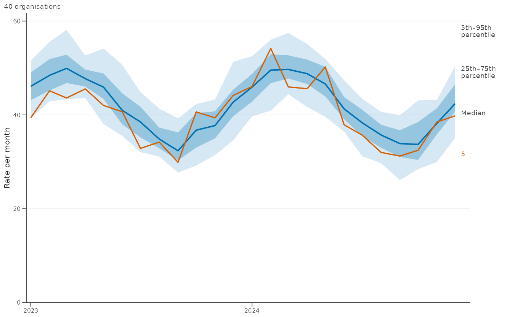

Distribution of prescribing across organisations over time
Source:R/plots.R
op_plot_distribution.RdSummarises many organisations (practices, Sub-ICB Locations, ...) per month as the median
with 25th-75th and 5th-95th percentile bands, and optionally overlays named organisations.
Use it with a rate (for example from op_antibiotic_use()) so organisations of
different sizes are comparable.
Usage
op_plot_distribution(
data,
y = NULL,
org = "org_id",
date = "date",
probs = c(0.05, 0.25, 0.5, 0.75, 0.95),
highlight = NULL,
highlight_label = NULL,
log = FALSE,
min_orgs = 10L,
ylab = NULL,
title = NULL,
subtitle = NULL,
source = TRUE,
base_size = 8
)Arguments
- data
Data frame with a date column and a numeric column to plot.
- y
Column to plot. Default
"rate"if present, otherwise"items".- org
Column identifying organisations (default
"org_id").- date
Date column (default
"date").- probs
Five probabilities for the lower band, inner lower, median, inner upper and upper band (default
c(.05, .25, .5, .75, .95)).- highlight
Organisation id(s) drawn as lines on top of the bands and labelled.
- highlight_label
Optional column giving display names for highlighted organisations (default
"org_name"if present).- log
Use a log10 y-axis (default
FALSE). Lines only; never bars.- min_orgs
Months with fewer organisations than this are dropped (default 10).
- ylab, title, subtitle
Text.
titleshould state the finding in a sentence; it isNULLby default (put the message in the figure caption of your paper).- source
Add the data-source caption (default
TRUE); or a custom character string.- base_size
Base font size (default 8 pt, see
theme_op()).
Value
A ggplot2::ggplot() object.
Examples
set.seed(1) # simulated organisations, for illustration only
sim <- expand.grid(date = seq(as.Date("2023-01-01"), by = "month", length.out = 24), org_id = 1:40)
sim$rate <- 40 + 8 * sin(2 * pi * as.integer(format(sim$date, "%m")) / 12) + stats::rnorm(nrow(sim), 0, 4) + sim$org_id / 10
op_plot_distribution(sim, y = "rate", highlight = 5, source = FALSE)
